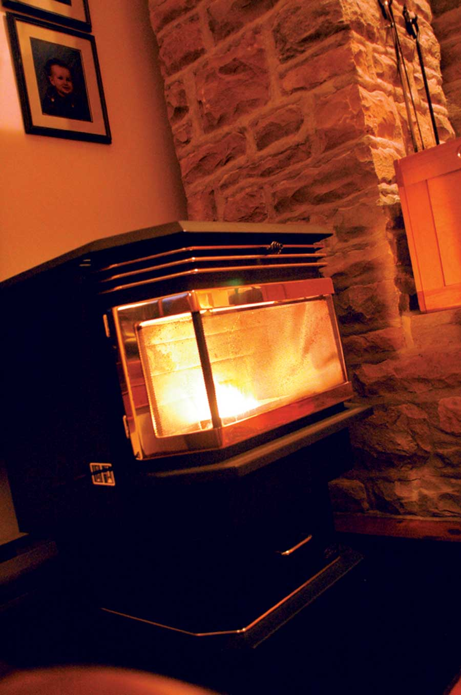

Dear Mother: June/July 2009
Letters to the editor about NAIS, biochar, electric lawn mowers, creating a sustainable future, a solar revolution and more.
Reader letters
June/July 2009
Denis Hayes for President
I’ve always enjoyed Mother Earth News for the great gardening articles, but your recent discussions of global environmental issues have been so concise and well-written that I’m keeping your magazine in my office to help me articulate opinions and vision with my colleagues and clients. In particular, Planning for a Sustainable Human Future by Bryan Welch and A Plan for the Solar Revolution by Denis Hayes are must-reads for all.
Welch’s analogy of visualizing success in completing a difficult physical challenge is effective and relevant in relation to our environmental challenges. His observations regarding human population balance present a compassionate and simple necessity. And Hayes lays out such a clear and comprehensive strategy for renewable energy that he should be our president.
Thank you for keeping the quality of discussion at this level.
Mike Bower
Sedona, Arizona
Stop the Political Nonsense
I have been reading Mother Earth News for as long as I have been able to read. I like the content and have enjoyed your magazine. However, since “green” has become a political movement, and those who I would term communists or die-hard socialists have taken the nonexistent, scientifically disproved global warming crisis and used it to control us, I have started to skip articles and at times the whole magazine. Please hear my plea. The political nonsense should be left out of my Mother Earth News.
Dennis Douglas
Consort, Alberta
More Questions Than Answers
I just got the April/May 2009 issue and, like always, dove right in. I turned straight away to A Plan for the Solar Revolution, but was left with more questions than answers. We’re a growth culture. Our current “success” as a species is dependent on increases in fossil fuel exploitation.
But declining energy supplies means no more growth. Recent banking shenanigans attest to that. And what about our centralized agriculture system that hasn’t turned a profit in decades? Do we let conventional agriculture fail in order to build these electric cars? How will we manufacture and distribute them without oil?
Some of the ideas in the article are brilliant and extremely appropriate for the future we face. But this article is still asking how to make more efficient the production of things we don’t really need. The real revolution begins when humans start asking themselves, “Do we really need to do this at all?”
This is our last chance, folks; the planet is counting on a mental paradigm shift, not eco-piety.
Tripp Tibbetts
Spokane, Washington
Emphasize Quality, not Quantity
If we had free, unlimited energy, our planet could still not support our marketing society. We mainly buy stuff we don’t need, and when we run out of room, we rent storage space to house all of it! It isn’t just global warming, though of course we need to do all we can not to add to the problem.
Jacques Cousteau said, “Until we do something about population, all that we do will not solve the problem” (paraphrased).
Bryan Welch is 100 percent right. We need to do something about population now. Regarding economic models, we need to change society and eliminate the “marketing” aspect. We have become so prosperous we can nearly retire and work only for the artistic pleasure of human existence while our basic needs are completely taken care of.
A planned reduction in material production with emphasis on product longevity and operational quality would still require workers, but take the money out of it so that we may work for pride in accomplishment. Keep up the good work and keep the emphasis on the real causes and solutions of global warming.
Richard Walter
Spokane, Washington
Walking Away from the Conversation
The article by Bryan Welch was poorly written and presented. It appears he hasn’t spent any time in other cultures, nor is he listening to the other side of the argument about the events he so dramatically reports as fact. You may cancel my subscription, because I didn’t subscribe to Mother Earth News for the political rhetoric that is starting to dominate.
Bill Mulholland
Newberg, Oregon
Keep it Up!
Thank you Mother Earth News, especially Bryan Welch, for writing about population issues. I know you’ve been taking some flak, but keep it up! I buy your magazine at the newsstand, but thanks to Planning for a Sustainable Human Future, I will be buying a subscription.
Beverley Wagar
Ontario, Canada
Difficult Choices
I want to commend you for tackling the population issue again in your April/May 2009 issue. I was surprised at the vehemence and anger with which so many people rejected any discussion of population. Our world is in trouble, and we can trace most of that trouble back to us. We are sentient beings; we can make choices based on a concept of the future that no other animal has.
The choices we will need to make for the health of the world and all of its residents will be extremely difficult, but that does not relieve us of the responsibility of making them.
Mark Blaauw-Hara
Boyne City, Michigan
Bitter Irony
I’ve been reading the ongoing discussion on population in your issues, and I tip my hat to you for staying strong despite some disappointed readers out there. While I understand the sensitivity of the issue for many, to simply ignore the discussion is such an unproductive approach.
There’s a real fear of regulation over something as personal as reproductive rights. Independence is one of our country’s core values, and is obviously dear to many Mother Earth News readers.
It is the choices that we make independently that can preserve the right for future generations to make their own decisions, as well. There’s a bitter irony in that the viewpoints most dismissive of such a discussion often are the ones that could ultimately lead to their own worst nightmare.
Brendan Addis
Vancouver, Washington
More than Fair
I am addicted to your magazine, the website and all of the newsletters that I receive. When my magazine comes in the mail, I cannot put it down until I’ve read it from cover to cover. My only complaint is that it only comes every other month! That is why I was so surprised to read about people canceling their subscriptions. I feel that your magazine is more than fair to all concerned, and you go out of your way to make sure that all sides are considered.
Christina Buxsel
Burlington, Kentucky
Seize the Day
Got the April/May 2009 issue. I can’t say enough about how I want to just crawl between the pages and live in it. So far, so far you have come, and now the audience has arrived, too. It’s an exciting time to be alive!
Gwen Roland
Griffin, Georgia
But How do I Get up to Code?
The recent articles Building a Home for $10,000 in 10 Days and Inspiring Handmade Homes are definitely good reading. But both beg the question (as have other articles in years past) of how to get buildings like these through building inspections and insure they meet local building codes.
Gazelder Lufetarg
Bon Air, Virginia
You’ll find advice about home building codes in Essential Advice for Owner-builders. - Mother
Great Mowers, Electric or Manual
Get Simpler
Regarding Mowing Down Pollution (April/May 2009): I hate to point out the obvious, but my manual Scotts push reel mower does a great job mowing, gives me a good workout, and uses no electricity and no fossil
fuels. I highly recommend getting simpler.
Amy McLaughlin
Salem, Oregon
No Need for Gas
In Mowing Down Pollution, I can’t see any reason for anyone to use a gas mower for a small to medium lawn. We purchased our Lawn-Boy cordless lawn mower in 1998. We’re still using the same battery. Our “lawns” have never been refined and we currently mow our natural prairie grasses sometimes only three or four times a season. The Lawn-Boy mows over thick patches of grass and will mow over wet grasses easily when you learn the technique. Plus, it’s quiet and doesn’t smell of petroleum fumes. We love it.
Candice Chatfield
Trujillo, New Mexico
Leading Coverage of NAIS
Thank you for again bringing the horrors of the National Animal Identification System into the light on your website, through blogs and articles, and for providing links for those of us who choose to make our voices heard. From where I stand, Mother Earth News has been the leader in bringing this terrible issue to the consciousness, and conscience, of many Americans. May we be heard.
Gerard Schubert
Wisconsin Independent Consumers and Farmers Assoc.
Berlin, Wisconsin
Feeding Birds Brings Bears
For those living in or near bear country, it is absolutely not a good idea to feed birds in summertime (Ask Our Experts). Birdseed is highly attractive to bears, and many bears will happily wander into your backyard to get this easy meal. This often leads to negative human-bear interactions as the bear becomes habituated to this food and spends more and more time in human-occupied areas. Tragically, more often than not these “problem” bears have to be destroyed, as they become a threat to human safety.
Heidi Arnold
Bremerton, Washington
You Can Beat City Hall
I am writing as a representative from the Citizens Action Group in La Pine, Ore. La Pine is one of four federal Demonstration Project sites that were chosen for studying nitrogen in the water supply and encouraging the installation of complicated, expensive and, for the most part, unnecessary treatment systems.
In the February/March 2008 issue, you featured an informative article, The Truth About Septic Systems by Lloyd Kahn. Our citizens group had been objecting to these types of systems for over a year at that point. That article helped us to understand the dynamics of the push to mandate the studies and installation of these systems as a money making venture on the part of county staffs and installers of these systems. You kindly sent us extra copies of your magazine and gave us permission to quote the article in our organizing efforts.
Despite almost 100 percent objection of the La Pine citizens, the county passed a law called the “Local Rule” to mandate the installation of these septic systems. But we didn’t give up. We collected 2,400 valid signatures on a petition to recall the Local Rule, forcing it to a vote. The county staff, local newspapers and big money interests all united against us. It was impossible to get them to acknowledge the truths so clearly detailed in Kahn’s article, or to publish any information from the U.S. Geological Survey study that countered their arguments.
So, we went to meeting after meeting of just about every organization or group we could think of who has an interest in water and the environment. The votes were counted on March 10, and we won by a wide margin! The Local Rule was repealed.
Now we will finally be able to work with the Oregon Department of Environmental Quality to create a comprehensive, sustainable plan to insure the quality of our drinking water in central Oregon. Mr. Kahn’s article was empowering for our grass-roots organization, and we are grateful to him and to your magazine. For anyone in a similar situation, we’d be happy to be a resource for starting your own grassroots movement.
Pamela Cosmo
Sunrise3@coinet.com
La Pine, Oregon
Victory Gardens Against Hunger
Right now, the working poor, seniors and children are in real crisis in terms of hunger. Food banks are stretched to the end of their resources. You can contact the local food bank to find out when they accept clean, fresh produce.
Out of our small garden last year we were able to donate over 550 pounds of fresh produce. This year, we plan to grow two beds dedicated to the food bank. It is simple to do and requires little work. Here is a link to our site, Madras Matters: Victory Gardens Against Hunger.
Nancy Petersen
Madras, Oregon
Pellet Stove Caution
Turn Waste Wood into Home Heat (February/March 2009) included the advice that fly ash should be cleared with a shop vac. Please issue a caution that the unit should be unused for a few days (say, one week) before using a vacuum cleaner. Otherwise any smoldering ember hitting a cyclone of combustible dust or char will cause an explosion.
Todd Millions
Eastend, Saskatchewan
Unclog Easily
How to Unclog Drains without Chemicals was full of good information. Here’s an additional tip: There’s a simple $2 gadget available in home improvement stores called “Zip-It.” It’s made of flexible plastic with little barbs and is about 18 inches long. It’s better than a wire for those clogs in the drain, and pulls out hair, etc., without needing to disassemble anything.
Jo Secrest
New Braunfels, Texas
Reading for the Articles, Not the Ads
I recently read a letter (Dear Mother) from a reader who said she wouldn’t renew her subscription because of an ad in the magazine. This sort of thing really makes my blood boil. I buy Mother Earth News because I enjoy the articles, ongoing education and exchange of ideas, not for the advertisements.
Most people don’t seem to understand that newspapers, magazines, television and radio stations make the bulk of their money from advertising. If I run across an ad that I don’t like, I go on by and continue doing what I bought the magazine for: reading the articles.
Randy Ruark
Madrid, Iowa
The Archive Saves the Day
I inherited all of my dad’s old Mother Earth News magazines and was desperately trying to find the Labor-saving Compost Bin article this morning to take plans over to neighbor. I couldn’t find it until I tried searching your website. Thank you for building such a great website with your old articles archived - I found it easily!
Tamrah Jo Ortiz
Woodland Park, Colorado
More Tips for Critter Control
Nature’s Pest Control
In your article on pest control (Coping with Critters), the author didn’t mention cats or dogs as a solution. While I realize that excess pet population is just as much a problem as excess human population, these predators do have their place in keeping a homestead safe for chickens, small livestock and vegetable gardens.
We used to have skunks under the hen house, but the dogs ran them off. In spite of having free-range chickens, I have not seen a rat, ever, or a mouse, since we got cats. Both dogs and cats will also kill gophers, snatching them out of the ground. Other things that don’t come around doggy places: rabbits, elk, deer, bears and cougars, all of which inhabit the mountains where I live.
Alima Fairchild
Cleveland, New Mexico
On Turkeys, and Politicians
I would like to see you get a copy of the April/May 2009 issue in the hands of President Obama, Secretary of Agriculture Vilsack, Energy Secretary Chu and the editors of Successful (LOL) Farming.
One more thing, for the folks bothered by hawks stealing their chickens (Ask Our Experts): About three years ago, I started running my chickens with turkeys, free range, and have only lost one bird since. Apparently the turkeys are much more alert. When they see trouble coming, they head for cover - and the smart chickens go with the turkeys.
Jim Smalley
Hillsboro, Texas
Discovering Biochar, Plus a Tip
Great for the Garden, and for the Planet
I was a poor teen planning to buy a comic book when I saw the first edition of Mother Earth News. I didn’t have enough money to buy the issue, so I read it right there, cover to cover. I made sure I saved enough to buy the second issue, and have enjoyed it ever since. It’s not perfect, but it’s No. 1 in my book, the best thing out there.
After reading Tap this Ancient Technique to Improve Your Soil, I have started to make biochar and am happy with the results. Having grown up in a farm and ranch family, I appreciate the ability to make fertilizer that will last for generations and help solve our carbon problem.
Russell Ade
Batesville, Arkansas
Phosphorus in Ashes? Nope, Potassium
I am writing about Tap this Ancient Technique to Improve Your Soil. This article states that wood ashes are a good source of phosphorus. This is incorrect. Ashes are rich in potassium.
Jeremy Bigelow
Ukiah, California
Oops! Jeremy is right, wood ashes are typically rich in potassium. Use them sparingly, though, because they are very alkaline and too much ash can raise your soil pH levels too high. - Mother
Generational Cabbage Cuisine
When I received my April/May 2009 issue, I couldn’t put it down. This has got to be the best issue yet! I especially enjoyed reading the article Count on Cabbage by Roger Doiron. My mother always used cabbage in our meals when we were growing up in New England.
A quick and healthy dish is stuffed cabbage made with ground pork or turkey. I use whole-grain rice, cooked until soft and mixed with the cooked ground meat. I add garlic, salt and pepper, and roll a couple spoonfuls in the cabbage leaf. After stacking them in a slow cooker, I pour tomato sauce or diced tomatoes over them and cook on high for a few hours. What a smell that dances through the house! Thanks for being in tune with what we want to read and learn.
Rob Kenneway
Baker, Florida
 ISTOCKPHOTO Can we navigate the curves the future has in store for us? |
 WOJTEK RADWANSKI/GETTY IMAGES While Planning for a Solar Revolution provides many "brilliant" ideas for the future of U.S. energy use, Tripp Tibbetts argues that new energy plans alone simply aren't enough. |
TOMVEZO.COM Readers write in that dogs and turkeys can be good guards against predators such as hawks. |
|
NEUTON Candice Chatfield loves her electric mower, and writes "I can’t see any reason for anyone to use a gas mower for a small to medium lawn." |
ELAYNE SEARS If your city doesn't permit open burning, check the fire pits at the local campground for biochar. |
 STEVE MAXWELL Reader Todd Millions warns that when cleaning a pellet stove with a vacuum, you should wait about a week after the last use for safety. |
|
DWIGHT KUHN Roger Doiron's article Count on Cabbage inspired Rob Kenneway to revisit his mother's recipe for stuffed cabbage. |
|
|